For this project, I used a YOLO version 8 object detection network with a YOLO version 8 backbones from COCO. I trained this model for 10 epochs on the training dataset of 1000 images, and the training loss for the classification (banana or background binary classification problem) and regression (bounding box coordinates regression) branches of the model are shown below. Both losses decrease steadily all throughout training, showing accurate representation of the training data and indicating there is no overfitting or underfitting.
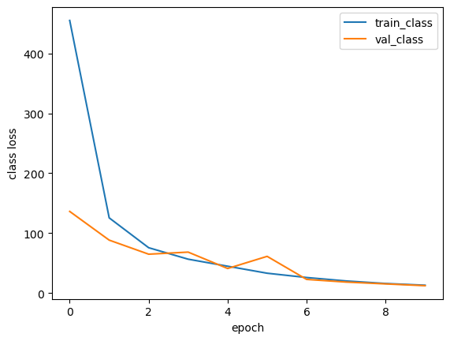
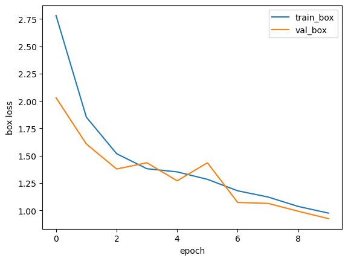
Below are some images from the validation dataset with the predicted bounding box(es) for the bananas. For every validation image shown, the banana was successfully detected. In a few cases, however, there are one or two additional boxes that are predicted in the wrong locations. While these predictions are wrong, they are not the most confidently predicted locations for the bananas. Therefore, the model is still very good at predicting the bananas in this dataset.
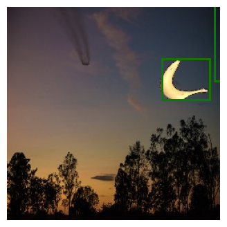
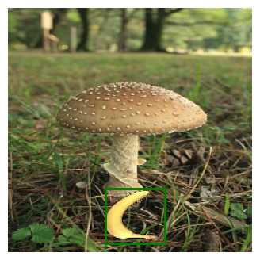
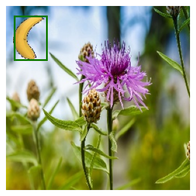
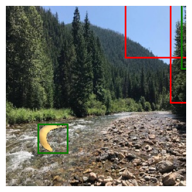
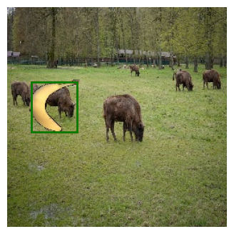
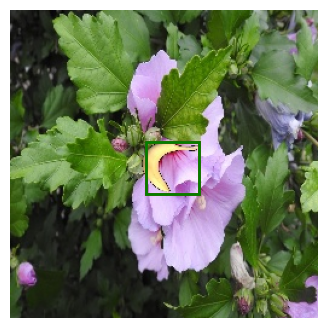
Below are some cases of images of bananas I took and tried to locate them with my model. The first part of the images that was challenging was that the bananas were very ripe, so they had lots of brown spots on them, making them much different than the color of the bright yellow bananas in the dataset. Additionally, the lighting is darker in some images and there are a few images where the banana is at a different angle and occluded by other objects.
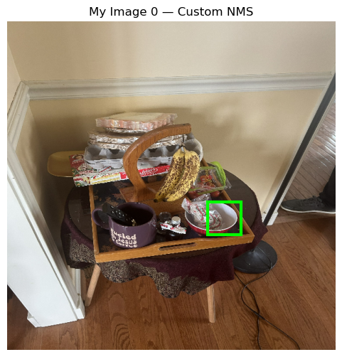
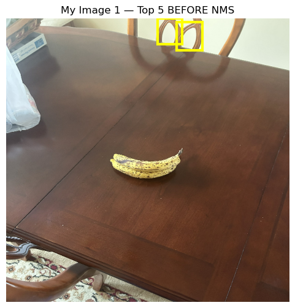
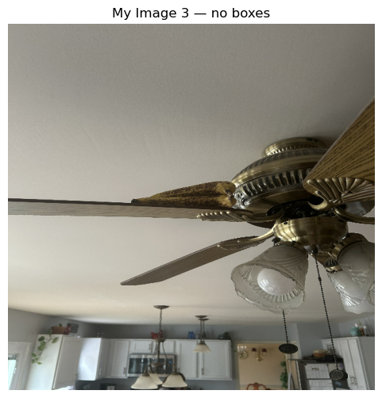
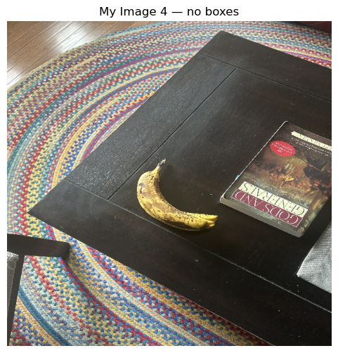
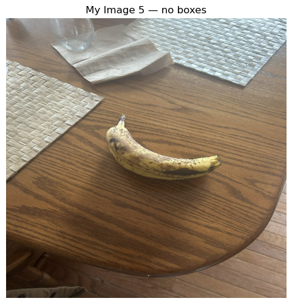
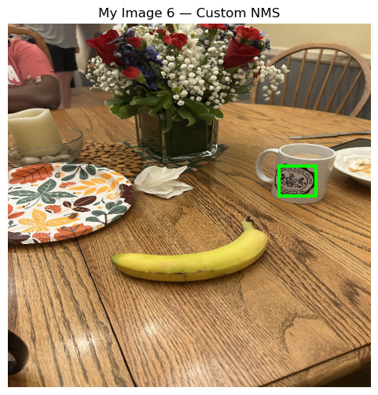
One thing I noticed from looking at the parts of the image the model thought was a banana was that the model misidentified something with similar curvature to the banana in the training data. This suggests that the model did not learn very much about the color or texture of the bananas in the training data, just the structure. Then, when the color and shape are different in my pictures, the model does not recognize them as bananas. Additionally, there are images where the bananas cannot be fully seen, or they are taken from different angles, causing the shape of the banana to be much different. It is also very difficult for the model to find the bananas in these images. Overall, it would help a great deal if there were more variation in the training data, as it appears the model has overfit to the specific banana overlaid on all the training images, making it difficult to identify bananas that were any different.
The figures below show the implementation of NMS using a tensorflow built-in function as well as from scratch. There was no difference between the custom NMS function and tensorflow built-in NMS function. All methods worked well with this model.
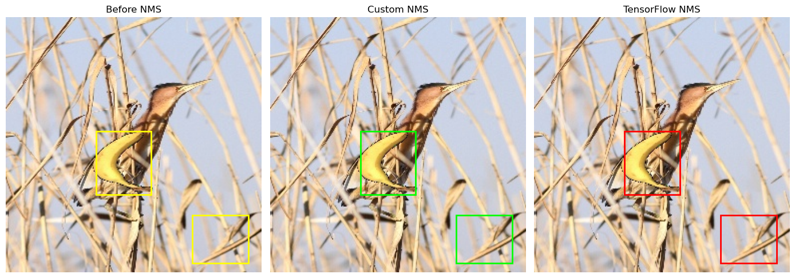
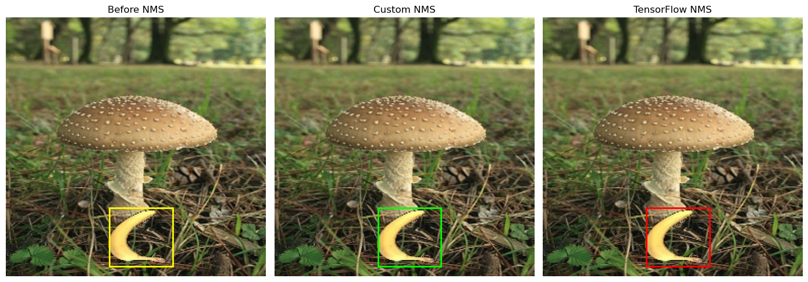
Based on the images above, the model is most likely not predicting many bounding boxes as bananas, which is why NMS seems to not be necessary in most cases. Since there are not many bounding box predictions with high confidence, the NMS algorithm does not need to filter many out. This is not a limitation of the NMS algorithm, but it is a limitation of the model used, as it would be better to propose more locations as possible bananas and let the NMS algorithm filter them to find the best option(s).
I used ChatGPT 5.1 to give me the human-object interactions of many images from the HICO-DET dataset. This VLM did very well and gave many accurate predictions for several different HOI positive cases. I gave the following prompt before uploading images to the VLM:
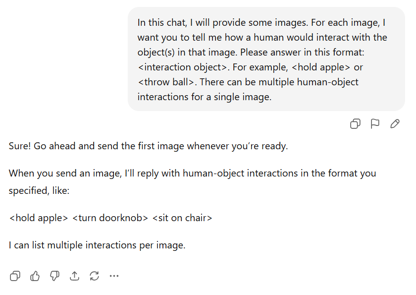
Next, I show an example of accurate predictions of the HOI for a motorcycle. The VLM predicted the many possible things one can do with the motorcycle. However, the <press foot peg> prediction would probably not be possible in this image, as that is only when the motorcycle is not moving. Since the motorcycle is being ridden, you would not press the foot peg down or the motorcycle would crash. It seems the ChatGPT VLM resorts to predicting extra HOIs, even if some are less likely to be correct.
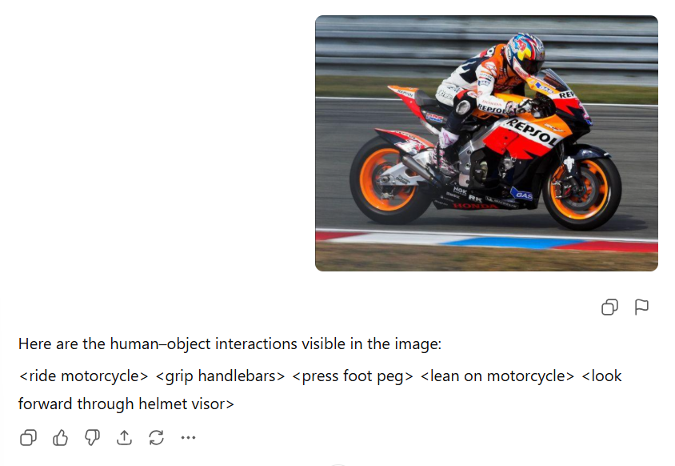
The next image was also accurately predicted; however, there was a glitch of some sort, <br>. This is a meaningless prediction, but the other predictions are accurate.
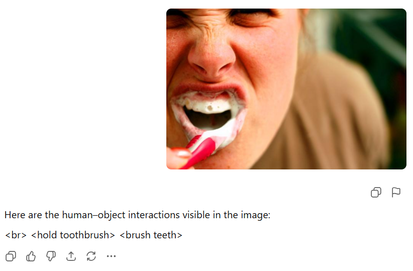
Next, an image of someone holding a toothpick over carrots was used. There is no knife in the picture (just a peeler on the side), the VLM said an HOI was to cut the carrots with a knife. While the image is misleading, the VLM was tricked since you cannot cut carrots with a knife.
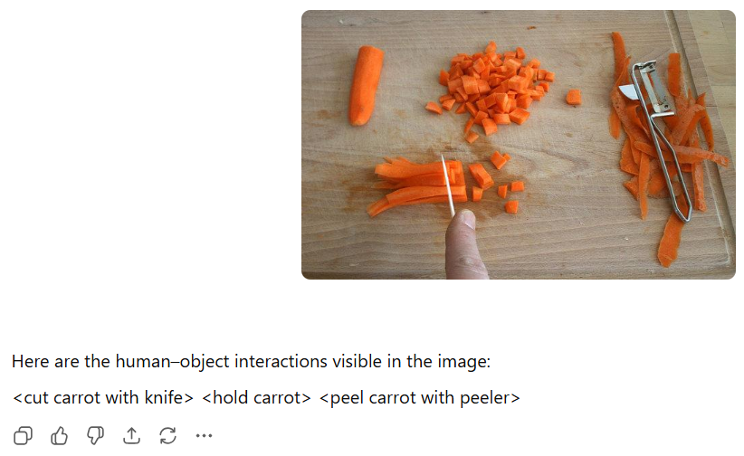
Last, the image below of a plane on top of another plane is pretty difficult to assign HOI to. The VLM does a good job of giving an HOI that is close to the ground truth label.
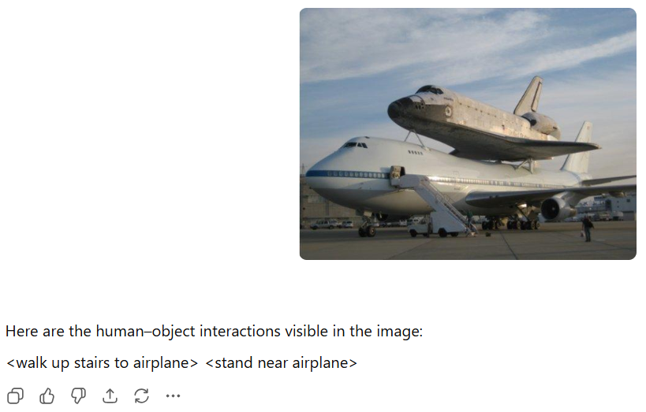
In the images above, the VLM does a good job of predicting HOI. However, in the example below, the VLM makes no HOI predictions for the liquid in the glass, just about the glass.
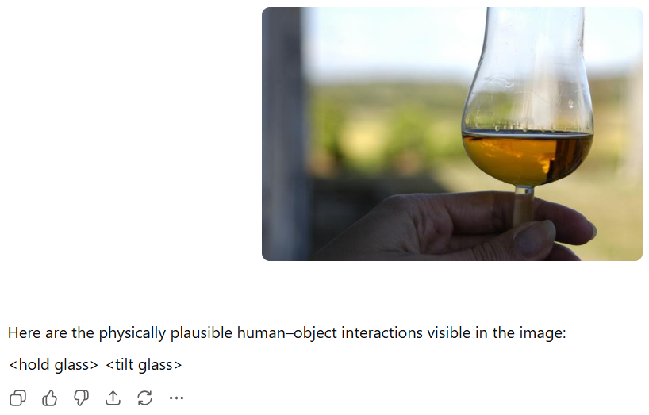
To predict the HOI for this image better, I told the VLM to consider sub-objects and what HOI there is with sub-objects as well as the main object. The result is that the HOI with the liquid was given. While drink the liquid was not predicted, the ones that were provided regarding the liquid were legitimate HOIs.
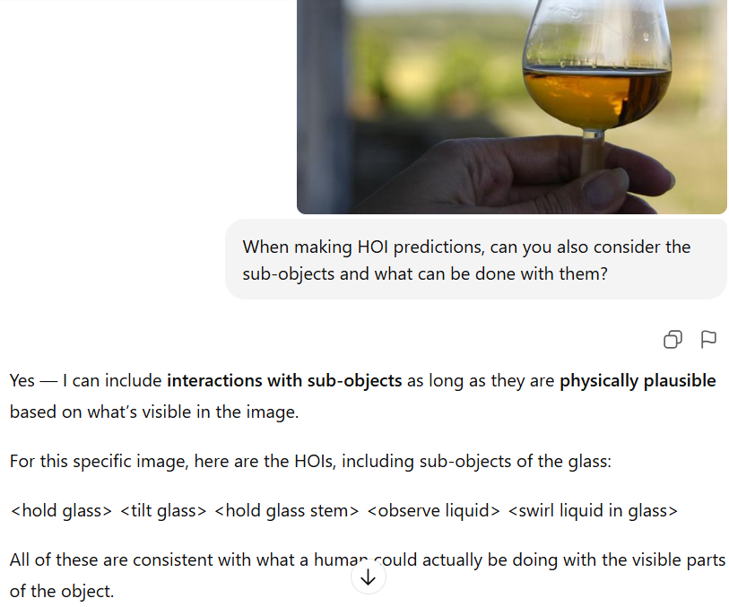